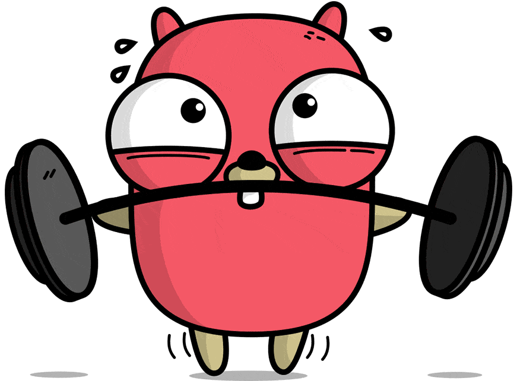

Go (часто также golang) — компилируемый многопоточный язык программирования, разработанный внутри компании Google[8]. Разработка Go началась в сентябре 2007 года, его непосредственным проектированием занимались Роберт Гризмер, Роб Пайк и Кен Томпсон[9], занимавшиеся до этого проектом разработки операционной системы Inferno. Официально язык был представлен в ноябре 2009 года. На данный момент поддержка официального компилятора, разрабатываемого создателями языка, осуществляется для операционных систем FreeBSD, OpenBSD, Linux, macOS, Windows, DragonFly BSD, Plan 9, Solaris, Android, AIX.[10]. Также Go поддерживается набором компиляторов gcc, существует несколько независимых реализаций. Ведётся разработка второй версии языка.
Существует несколько компиляторов и надстроек над ними:

package main
import "fmt"
func> main() {
fmt.Println("Hello, World!")
}